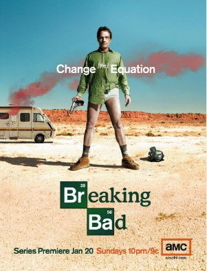
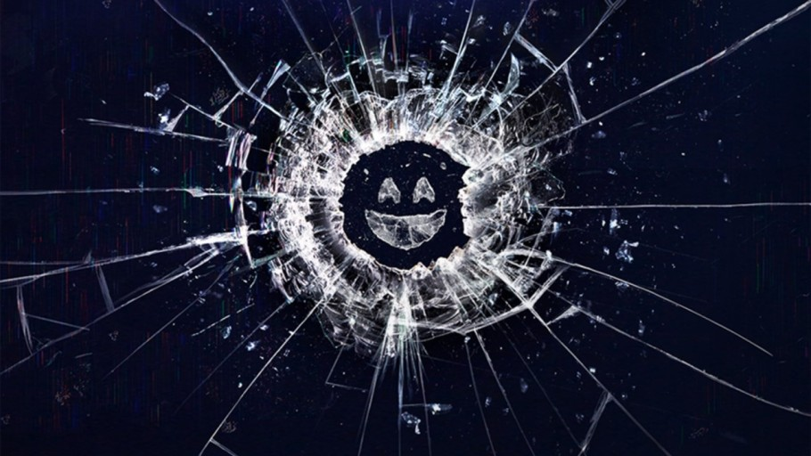
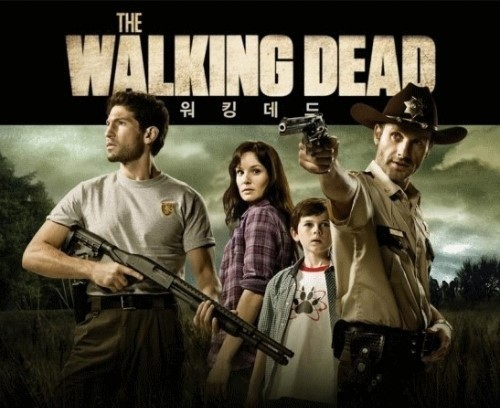
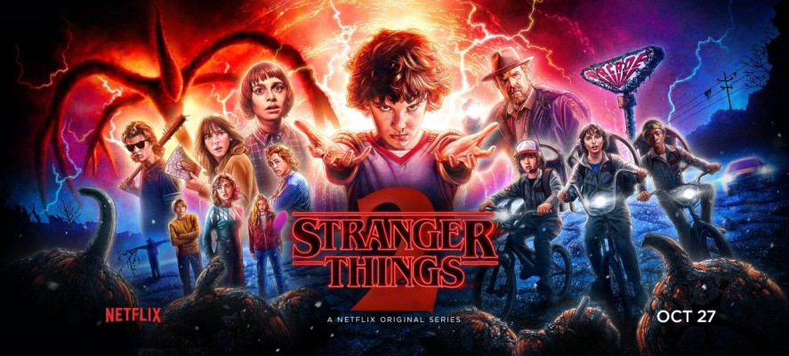

2.Breaking Bad

소개: 암에 걸려 시한부 판정을 받은 한 고등학교 화학교사는 가족의 앞날을 위해 졸업한 제자에게 동업하여 마약을 만들어 팔 것을 제안한다.
마약제조를 하는 화학교사를 상대로 생기는 블랙 코미디 인데요. 화학교사가 암에 걸려서 가족의 생계때문에 마약을 제조하는 시나리오를 가지고 있습니다. 실제로 역대 미국 최고의 드라마중에 탑 오브 탑이라는 평론을 받고 있으며
넷플릭스 추천 미드에 꼭 들어가는 작품이기도 합니다.
링크:
3.블랙미러

소개:눈부시게 발전한 첨단 기술. 하지만 인간의 어두운 본능이 그 기술을 이용하면서, 기이한 악몽이 시작된다. '디지털 시대의 <환상특급>'이라 불리는 SF시리즈.
영국드라마인데요. SF 라기보다는 약간의 풍자와 해학을 담은 이야기 입니다. 미래기술에 대한 스토리에 부작용이라는 MSG 를 쳐서 만든건데 폐북이나 인스타와 같은것들이 자신의 신용등급처럼 메겨진다는 내용 입니다.
웃기기도 하지만 한편으로는 씁쓸한 드라마 입니다.
링크:
4.워킹데드

소개: 좀비로 가득한 세상에서 살아남은 생존자들의 사투를 그린 드라마
미국판 좀비 스릴러인데요. 케이블 TV에서 역대 최고의 시청율을 가지고 있는 워킹데드에는 많은 교훈이 담겨 있습니다. 좀비 공포 액션물이기도 하지만 그속에는 끔찍한 좀비가 무서운지 혹은 속내를 알수없이
감추고 살아가는 사람이 무서운지를 다시한번더 생각하게 하는 작품 입니다.
링크:
5.기묘한 이야기

소개: 실종된 소년 윌 바이어스가 돌아온 1년 후, 인디애나 호킨스 마을에서 벌어진 더욱 기묘해지고 고대한 사건을들 다룬 미스터리 스릴러
시즌3까지 제작된 기묘한이야기는 넷플릭스 미드 추천 하면 꼭 언급됩니다. 2016년에 방연된 SF공포드라마로 넷플릭스에 공개된 드라마이며 현재 시즌3까지 종료된 상태 입니다.
2017년에는 구글 드라마 부문 검색어1위에 선정되었고 한국인이 가장많이 정주행한 넷플릭스 드라마로 뽑혔다고 합니다.
링크:
더많은 드라마가 궁금하다면 아래 링크를 참조하길 바란다.
링크: